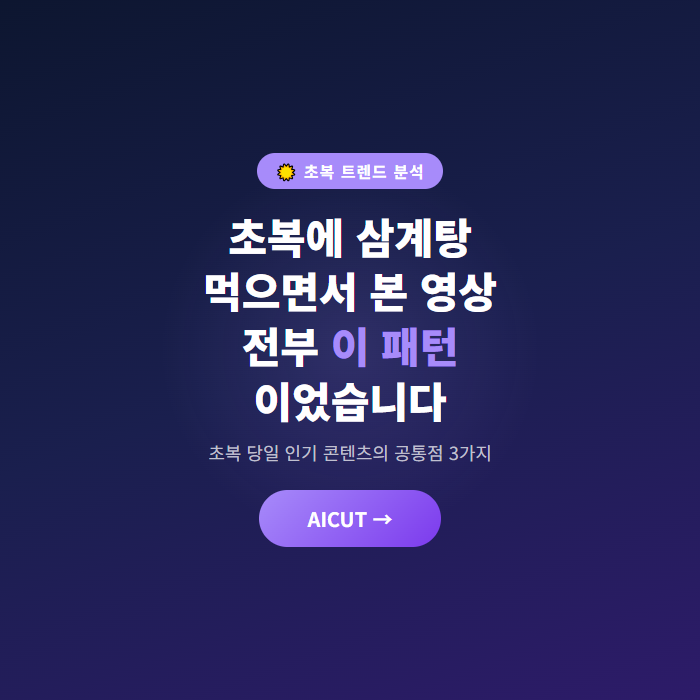
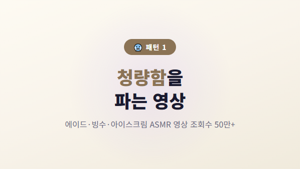
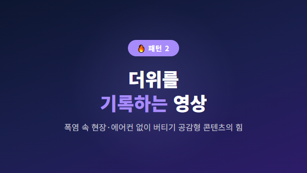
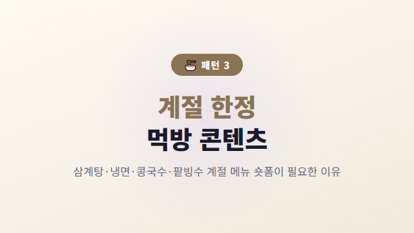
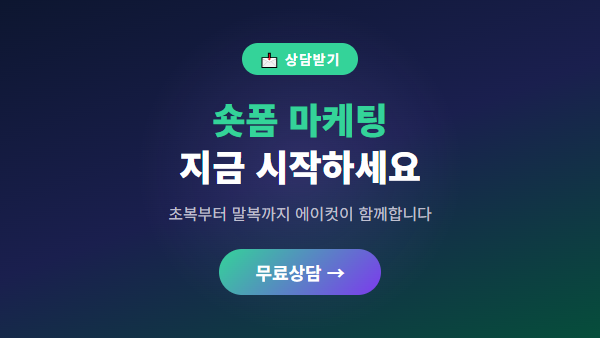

상반기 마케팅 성과는 어떠셨나요?
잘되고 계신 분도,
생각만큼 결과가 나오지 않은 분도 계실 거예요.
그런데 말입니다.
7월은 그냥 지나가는 달이 아니에요.
여름이 본격적으로 시작되는 달이자,
하반기 마케팅의 첫 신호탄이기도 합니다.
특히 올해는 초복 날짜 2026이
7월 중순에 자리잡고 있어서,
더위를 활용한 마케팅 타이밍이 딱 맞아떨어집니다.
오늘은 초복 날짜 2026을 시작으로
하반기 영상 마케팅 전략을
함께 정리해볼게요.

올여름 삼복 더위,
정확한 날짜부터 확인해볼게요.
🥇 초복: 2026년 7월 14일 (화)
🥈 중복: 2026년 7월 24일 (금)
🥉 말복: 2026년 8월 13일 (목)
초복부터 말복까지 약 한 달.
이 기간 동안 사람들은
더위를 피할 방법,
시원한 음식,
휴가 계획,
피부 관리 등에 관심이 집중됩니다.
이 시기에 맞춰
숏폼 영상 마케팅을 돌리면
자연스럽게 고객의 관심을 끌 수 있어요.

많은 분들이
"하반기는 9월부터 준비하면 되지"
라고 생각하세요.
하지만 실제로는
7~8월에 미리 콘텐츠를 준비해둔 사람들이
9월부터 본격적인 시즌에서
확실한 차이를 만듭니다.
이유는 간단해요.
✅ 7~8월은 영상 제작 성수기
편집샵마다 물량이 밀리는 시기라,
지금 주문해야 9월에 여유롭게 시작할 수 있습니다.
✅ 여름 콘텐츠 자체가 조회수 상승 요인
더위·냉면·휴가·보양식 등
여름 키워드는 SNS에서 자연 조회율이 높습니다.
✅ 하반기 예산은 7월에 확정
많은 기업이 7월에 하반기 마케팅 예산을 확정하고,
8월부터 실제 집행에 들어갑니다.
지금 준비하지 않으면,
9월부터는 이미 늦습니다.

여름은 보험 가입 문의가 늘어나는 시기입니다.
태풍·폭염·장마 등
자연재해에 대한 관심이 높아지면서
보험의 필요성을 느끼는 분들이 많아지거든요.
숏폼 추천 콘텐츠:
"장마철 침수 대비,
이 보험 하나면 됩니다"
형식의 짧은 정보형 영상
7~8월은 이사 수요가 상대적으로 적은 편이지만,
방학을 앞둔 세대의
전·월세 문의는 꾸준히 있습니다.
오히려 경쟁이 적은 시기에
매물 영상을 꾸준히 올리면,
알고리즘 노출에서 유리합니다.
여름철 피부 관리,
다이어트,
체중 감량에 대한 관심이 폭발합니다.
원장님이 직접 촬영한
간단한 관리 팁 영상을
숏폼 마케팅으로 활용하면
신뢰도와 문의율이 동시에 올라갑니다.
초복·중복·말복은
외식업계의 대목입니다.
보양식 메뉴 홍보,
시즌 한정 메뉴 영상으로
고객 방문을 유도하세요.
1. 정기 납품 시스템 구축하기
주 2~3편, 월 10~20편의 영상을
정기적으로 제작하는 시스템을 만드세요.
매번 찍고 편집하는 데 시간 뺏기면
본업에 집중할 수 없습니다.
2. 숏폼 위주 콘텐츠 기획
릴스, 쇼츠, 틱톡 등
숏폼 플랫폼에 최적화된
영상편집아웃소싱을 활용하면
효율이 훨씬 높아집니다.
3. 시즌 키워드 영상 선제 발행
초복 날짜 2026, 장마, 휴가, 방학 등
지금 검색되는 키워드로
영상을 미리 만들어두면
시즌이 되었을 때
자연스럽게 고객이 찾아옵니다.

에이컷은
FP·부동산·병원·프랜차이즈 등
다양한 업종의 영상 편집을
정기 납품해드리는
영상 편집 아웃소싱 전문 기업입니다.
촬영만 하시면
편집은 저희가 전부 해결합니다.
✔ 숏폼 30초~1분 집중 편집
✔ 릴스·쇼츠·틱톡 해상도 최적화
✔ 자막·배경음악·효과 일괄 적용
✔ 월 정기 납품으로 일정 관리 끝

📞 지금 바로 상담하세요
하반기 영상 마케팅,
초복 날짜 2026부터 시작하세요.
지금 준비하는 사람이
9월에 웃습니다. 😊
#초복날짜2026 #초복 #중복 #말복 #삼복더위 #여름마케팅 #하반기마케팅 #영상편집외주 #영상편집아웃소싱 #숏폼마케팅 #릴스마케팅 #쇼츠마케팅 #틱톡마케팅 #FP마케팅 #보험마케팅 #부동산마케팅 #병원마케팅 #프랜차이즈마케팅 #에이컷 #영상제작 #숏폼제작 #영상편집 #마케팅전략 #7월마케팅 #8월마케팅 #하반기준비 #콘텐츠마케팅 #SNS마케팅 #인스타릴스 #비즈니스마케팅